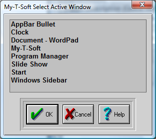

| My-T-Soft®: for Windows; Indestructible Keyboards and Indispensable Utilities; Version 1.80; User's Guide | ||
|---|---|---|
| Prev | Next | |

This list shows all of the current active windows running on your system. You may select the Window Name from the list. You may wish to modify the name to remove any open documents, or other information that may change. My-T-Soft must have an exact match to recognize the need to automatically open the Macro Panel.
Once you have found the name double click on it or highlight your selection & click on the OK Button. Press the CANCEL button to Close the Dialog & cancel the Select operation.
Browse Programs Dialog Box
This opens the My-T-Soft Browse that allows you to select from available programs on your system. Short file names are used for maximum compatibility. Once you have found the name of the program to run double click on it or highlight your selection & click on the Open Button Press the Cancel button to Close the Dialog & cancel the Browse operation.